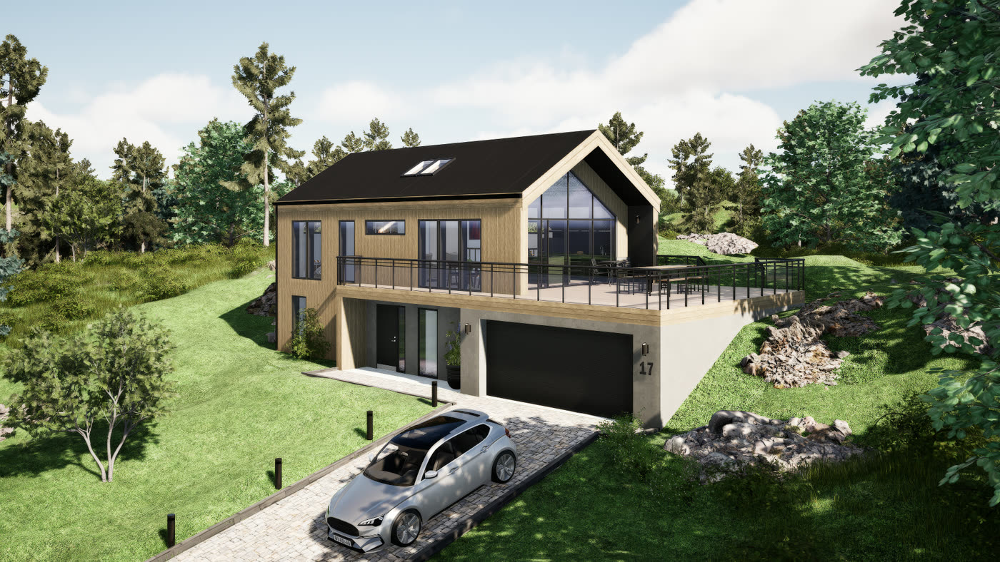
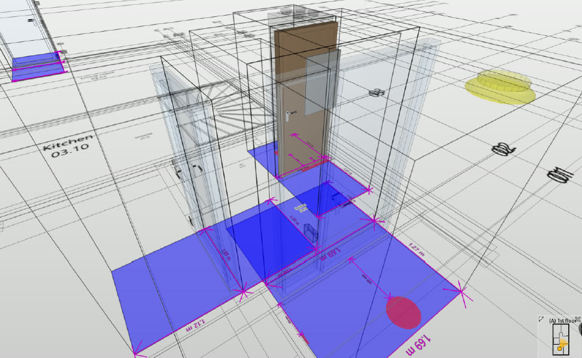
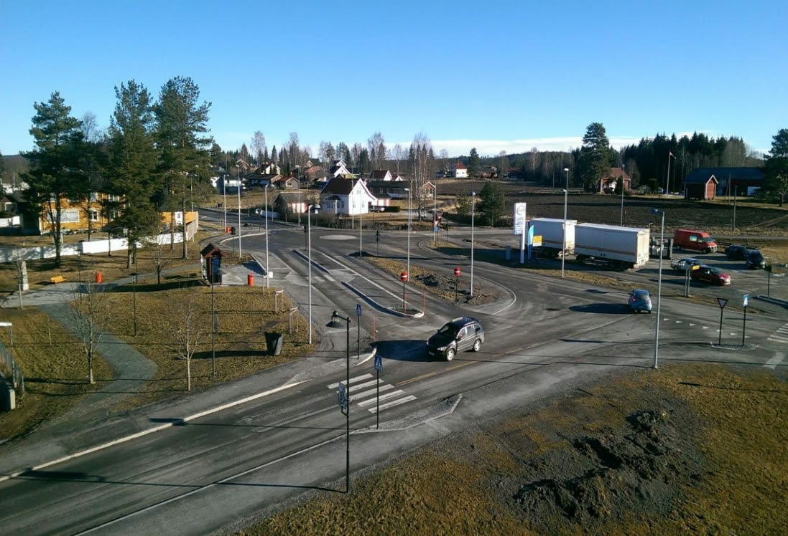
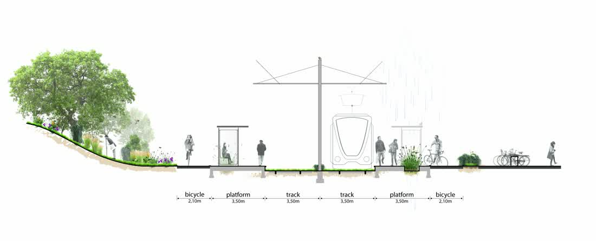
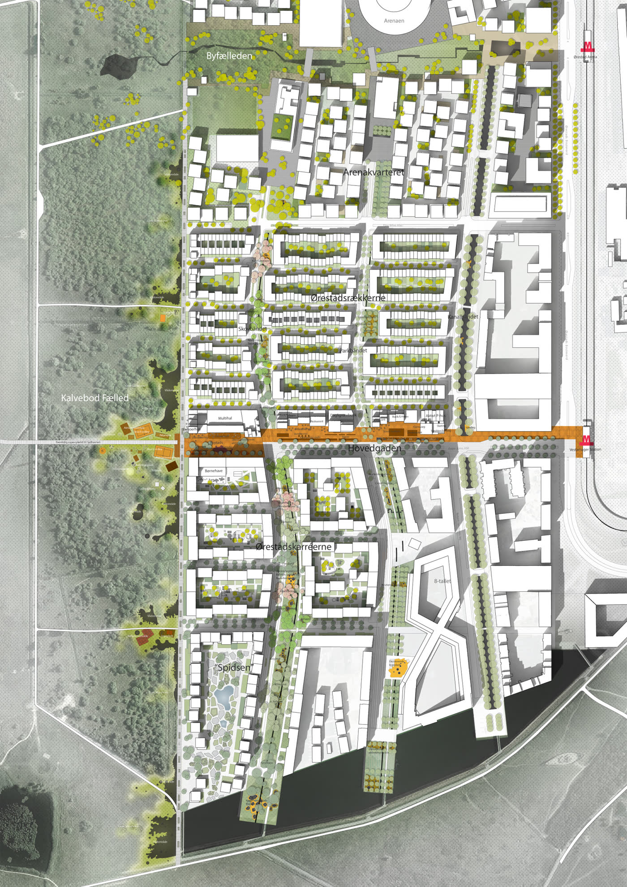
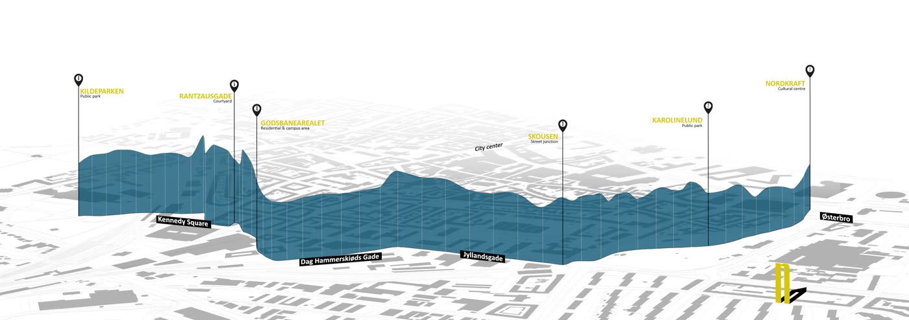
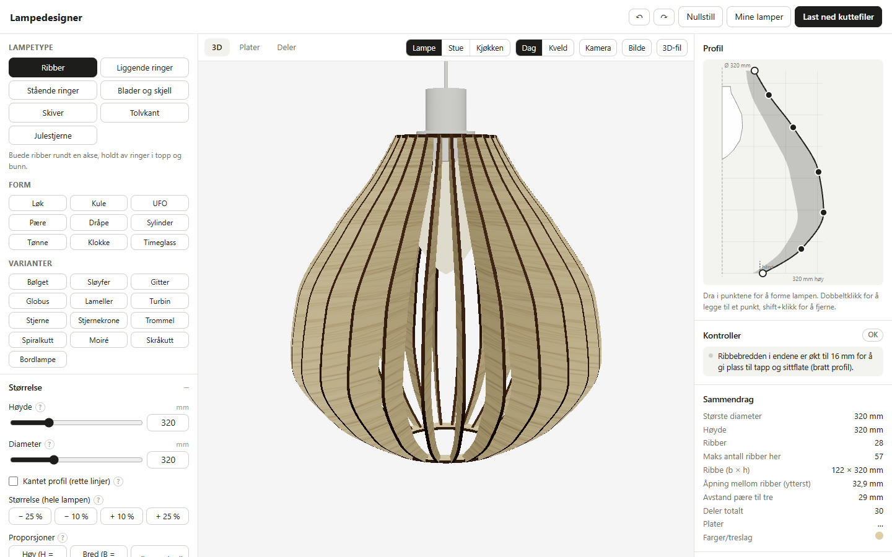
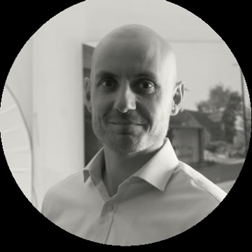

Teknisk designer
Uddannet på Noroff i 2025. Tegner i AutoCAD og modellerer i Revit og Inventor. Eksamensprojekt og praktik hos MARK Arkitekter.
Jeg er teknisk designer og cand.tech. i urban design. Jeg har bygget en prototype, der kontrollerer en vejtegning og screener den for modulvogntog.
| Emne | Teknisk designer til avanceret projektering og 3D-modellering | ||
|---|---|---|---|
| Tegnet af | Lars Haugen Grenaker | ||
| Rev. | A | Mål | 1:1 |
| Tegn.nr. | LHG-2026-001 | Dato | 15.11.2026 |
Jeg har arbejdet som byplanlægger, monteret vindmøller og uddannet mig til teknisk designer. I denne stilling kan jeg bruge det hele.
Uddannet på Noroff i 2025. Tegner i AutoCAD og modellerer i Revit og Inventor. Eksamensprojekt og praktik hos MARK Arkitekter.
Prototypen på denne side har jeg udviklet med AI. Den kontrollerer en tegning og screener den, direkte i browseren. Prøv den
Bachelor fra Stavanger med vejplanlægning og landmåling, kandidat fra Aalborg. Jeg planlægger med blik for dem, der går og cykler. De bliver stadig ofte overset.
Faglært i produktion og montage fra Skjern Tekniske Skole. Montør og tekniker siden 2021, i dag Surveillance Specialist hos Momentum Energy Services.
Revit, Solibri og Twinmotion lærte jeg på ét år på Noroff.
En vejtegning går ind. Et udkast til screeningsnotat kommer ud.
Prototype til tidlig screening. Erstatter ikke AutoTURN eller faglig vurdering. Udviklet af mig med AI. Ikke et færdigt produkt og ikke godkendt af Vejdirektoratet. Eksemplet er et opdigtet kryds.
Eksempeltegningen indeholder med vilje otte afvigelser. Kontrollen finder dem ud fra otte regler, som er inspireret af Vejdirektoratets Modelstandard og Tegningsstandard.
Laglisten er demoens egen. Ukendte lag er markeret, rollen gættes ud fra navnet og kan ændres. En uploadet fil bliver i din browser.
Vælg køretøj og tryk Kør. Køremåde A, 15 km/t, 0,3 m arealtillæg på hjul og karosseri. Arealbehovet må ikke gå ind over kantsten, fortov, cykelsti eller modkørendes kørebane.

Opgave: En bolig i Son i Norge, tegnet efter bygherrens ønsker og de lokale planbestemmelser.
Min rolle: 3D-model i Revit, tekniske tegninger, mængdeudtræk og visualiseringer i Twinmotion. Karakter A.

Opgave: Kontrollere bygningsmodeller, før de deles.
Min rolle: Kollisionskontrol, regeltjek og kontrol af modellernes information.

Opgave: Kommunens plan for 2017–2021 med vægt på sikre skoleveje.
Min rolle: Udarbejdede planen som by- og regionalplanlægger: status, mål og tiltag.

Opgave: Strategi og designforslag for en letbane med et centralt knudepunkt.
Min rolle: Kandidatprojekt om, hvordan letbanen indpasses i gaderummet.

Opgave: Konkurrenceforslag til en ny bydel i Ørestad for By & Havn.
Min rolle: Praktikant på holdet bag forslaget. Jeg arbejdede især med karréløsninger og aktivitetsområdet Plug N Play.

Opgave: Hvordan kan en by fortættes uden at miste livskvalitet?
Min rolle: Jeg undersøgte, hvordan mennesker påvirkes af deres omgivelser, når de går gennem byen, fra park til trafikeret kryds. På den baggrund tegnede jeg et forslag til et tæt boligområde, hvor gående, cyklister og kollektiv trafik går forud for biler.

Opgave: Et program, hvor en lampe formes parametrisk og bliver til skærefiler til laser.
Min rolle: Udviklede programmet. Det laver SVG og DXF i 1:1, fordeler delene på plader og tester dem for kollisioner i 3D.
Hele siden og demoen er lavet med Claude. Jeg har styret arbejdet, testet resultaterne og kontrolleret dem.
Reglerne har jeg valgt, og forenklingerne står i notatet. Køretøjernes mål er antagelser, og laglisten er min egen. Alt kører i browseren uden server.
Ved siden af mit arbejde driver jeg Realty Video, hvor jeg bruger AI til blandt andet kodning og videoproduktion.
| Opgave i stillingsopslaget | Idé |
|---|---|
| Overgangen fra PDF-tegninger til 3D-modeller | Et lille værktøj, der tjekker navngivning og data mod standarden, før en model deles. |
| Kvalitetssikring af projektdata | Automatisk forkontrol af lag, attributter og tegningshoveder før udbud. |
| Screening for modulvogntog | Et hurtigt første svar på, om et kryds er værd at regne videre på i AutoTURN. |
AI erstatter ikke fagligheden. Resultatet skal altid efterprøves af en, der kender faget.

Faglært teknisk designer og cand.tech. i urban design. Bor i Horsens.
Hent CV som PDFRevit, AutoCAD, Inventor, Solibri, Twinmotion, SketchUp, PCSCHEMATIC Automation, LightBurn, Replit, Photoshop, Illustrator, InDesign, Premiere Pro, Word, Excel, PowerPoint